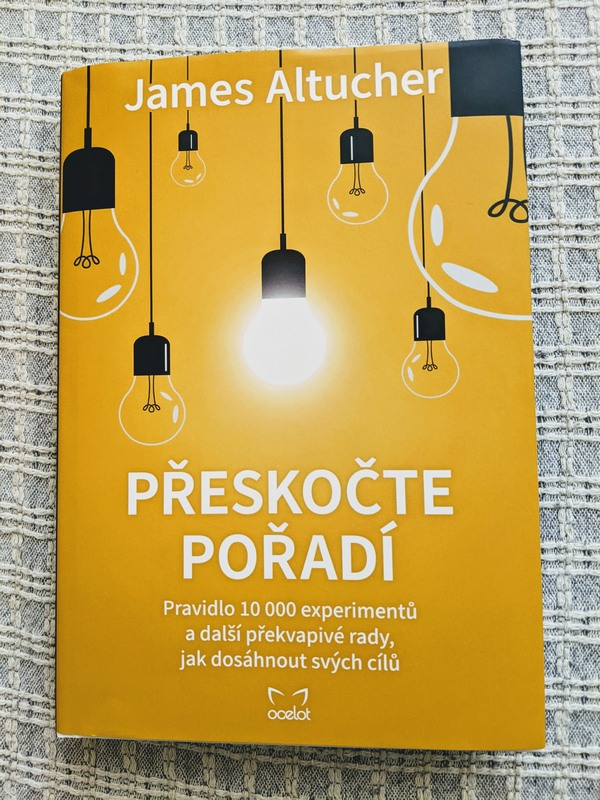

Dlouho jsem tu neměla žádnou “motivační” knihu - dílem asi i proto, že na jejich efekt už moc nevěřím. S nabídkou recenzního titulu " Přeskočte pořadí" mě oslovily Megaknihy.cz, a přestože teď - po náloži populárně-naučné literatury od Ježíška 8-) - vyhledávám spíš beletrii, nakonec jsem si řekla, že dám pro mne dosud neznámému autorovi šanci.
James Altucher je americký podnikatel, investor, spisovatel i autor podcastů, zároveň je ale také člověkem, který se několikrát octnul na dně, od něhož se dokázal vždy znovu odrazit. V knize čtenářům s podnikavým duchem přináší své zkušenosti, rady a tipy, jak své nadšení a nápady zkusit přetavit v úspěch, na který nebudete muset čekat desítky let. Kniha je poměrně prakticky napsána, ale celkem mi na ní vadila jistá nestrukturovanost - text působí místy dost chaoticky a autor skáče od jednoho tématu k druhému. Jak jsem teď zvyklá na ty “Melvilovky”, tohle na mě z pohledu žánru populárně-naučné literatury působilo trochu “amatérsky”.
Některé kapitoly jsem pročetla, aniž by ve mně vyvolaly jakýkoliv zájem, jiné mě zase naopak svou trefností oslovily velmi - třeba ta o pravidle 50/1, v níž autor medituje nad efektivitou osmihodinové pracovní doby a produktivity práce. Kromě svého osobního příběhu, který v knize James Altucher vypráví (opět ale nijak systematicky či chronologicky, obrázek si čtenář dělá spíš postupně z jednotlivých útržků), přináší také celou řadu příkladů dalších úspěšných a inspirativních lidí, ať už z oblasti sportu, umění či byznysu.

Jistý “aha-moment” pak přináší kapitola " Staňte se podnikatelem", v níž autor se sebereflexí přiznává, že podnikání obětoval život a jednou z oblastí, kterou mu to poznamenalo, jsou i pošramocené rodinné vztahy. To ve čtenáři nutně vyvolává otázky, proč si vlastně nechat radit od člověka, s nímž část rodiny přerušila vazby. Vypovídá to víc o něm či o jeho rodině? Dá se vůbec někdo takový považovat za úspěšného, když to, na čem v životě skutečně záleží, mu do jisté míry ztroskotalo?
Nemám na to jednoznačný názor. Každopádně si nejsem jistá, zda právě " Přeskočte pořadí" je ta kniha, kterou bych doporučila někomu, kdo se chystá rozjet své podnikání. Ačkoliv kniha otevírá zajímavá témata, nepropracovává je dostatečně do hloubky, a tak zde zákonitě ani není prostor pro nějaké objevné myšlenky. A to je u literatury tohoto žánru prostě chyba.